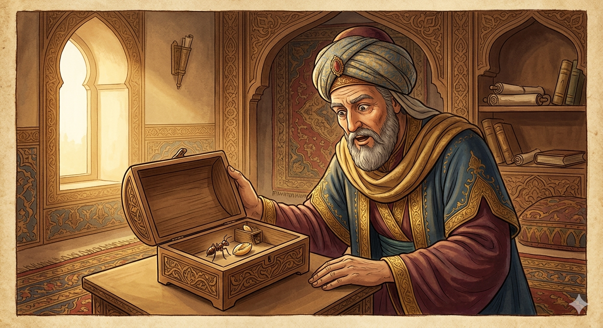

И.А. Дахкильгов. Хьехаме дувцарш - поучительные рассказы-притчи.
И.А. Дахкильгов. Хьехаме дувцарш - поучительные рассказы-притчи. Из ингушского фольклора.

Хьурмат дар
- Сулейма-пайхамара хаьтта хиннад зунгатага: - Из корта ма боккха ба хьа! - Болче, хьаькъал чулаца моттиг я-кха. - ТӀаккха из юкъ хӀанай хьа селлера йиткъа? - Эздийча сага юкъ йиткъига хул. Аз айса дуаш дола хӀама ца дала мара даац. - Мел кхача буъ Ӏа шера? - Сона шера цхьа кӀина фийг тоъ. - Цхьан фийгах кхоачам бу Ӏа? Тамаш я-кха бойя! - аьнна, Сулейма-пайхамара ший эздешта тӀадиллад кӀопилга чу цхьа фийг а тессе, цу чу зунгат дӀехеца, аьнна. Шу дӀадаьннад. Сулейм-пайхамара зунгат дицденна хиннад. Цкъа Ӏохайна вагӀаш, кӀопилга чу доалла зунгат дага а деха хьежа из, чӀоагӀа цецваьннав: шера ах фийг мара биаь хиннабац зунгато, хӀаьта вож ах кхобеш хиннаб. Сулейма-пайхамара: - Ах фийг мара хӀана биаьбац Ӏа? - аьнна хаьттад. - Ах фийг мара биаьбац, - аьнна, жоп деннад зунгата, - хӀана аьлча, со укх баьдеча чуделлачоа кхы а цхьаьккхача шера со дицдала мегар.
РУССКИЙ
Бережливость
Увидев муравья, пророк Сулейман воскликнул: - Какая у тебя большая голова! - Значит есть место, куда много мозгов поместится. - А почему же у тебя такая тонкая талия? - У благородного талия всегда тонкая. Я ем лишь столько, сколько нужно для поддержания жизни. - Сколько же ты ешь? - Мне на год хватает одно пшеничное зерно. - Всего одно зерно? Трудно в это поверить, - сказал пророк Сулейман и поручил своим сподвижникам положить в коробочку одно зерно и заключить туда же муравья. Прошел год. Пророк Сулейман и забыл про муравья. Прошло еще немного времени, и пророк вспомнил о нем. Заглянул он в коробочку. Каково же было удивление пророка, когда он увидел, что за год муравей съел всего половину зернышка и приберег вторую его половину. - Почему ты съел всего половину зернышка? - удивился пророк. - Съел только половину потому, - ответил муравей, - что человек, посадивший меня в эту темницу, мог забыть обо мне еще на год.
ENGLISH
Frugality
Upon seeing the ant, the Prophet Solomon exclaimed: 'What a big head you have!' 'That means there's room for plenty of brains.' 'But why do you have such a slender waist?' 'A noble person always has a slender waist. I eat only as much as is necessary to sustain life.' 'How much do you eat, then?' 'A single grain of wheat is enough for me for a whole year.' 'Just one grain? That's hard to believe,' said the Prophet Solomon, and he instructed his companions to place a single grain in a small box and put the ant inside it as well. A year passed. Prophet Solomon had forgotten all about the ant. A little more time went by, and the prophet remembered it. He looked inside the box. Imagine the prophet's surprise when he saw that, over the course of a year, the ant had eaten only half the grain and saved the other half. 'Why did you eat only half the grain?' asked the prophet in surprise. 'I ate only half,' replied the ant, 'because the man who put me in this prison might have forgotten about me for another year.'
НОХЧИЙН
Хуьрмат дар
Сулейман-пайхамара хаьттина хилла зингате: - И корта ма боккха бу хьан! - Болуш, хьекъал хьекъал чулаца меттиг йу-кха. - ТӀаккха и йукъа хӀунда йу хьан сел йуткъа? - Оьздачу стеган йукъ йуткъах хуьлу. Ас айса дууш долу хӀума ца дала бен даац. - Мел кхача буу ахь шарахь? - Суна шарахь цхьа къан буьртиг тоьа. - Цхьан буьртигах кхачам бо ахь? Тамаш бу-кха бахь! - аьлла Сулейман-пайхамара шен оьдашна тӀедиллина аьлла, гӀутакхна чу цхьа буьртиг а тасе, цу чу зингат дӀахеца, аьлла. Шо дӀадаьлла. Сулейман-пайхамаран зингат дицделла хилла. Цкъа охьахиъна вехаш, гӀутакхна чу доллу зингат дага а деъна хьаьжна иза, чӀогӀа цецваьлла: шарахь ах буьртиг бен биъна хилла бац зингато, хӀета важа ах кхоъбеш хилла. Сулейман-пайхамара: - Ах буьртиг бен хӀунда биъна бац ахь? - аьлла хаьттина. - Ах буьртиг бен биъна бац, - аьлла, жоп делла зингато, - хӀунда аьлча, со хӀокху бодане чудоьллинчун кхин а цхьан шарахь со дицдала магар.
ПОГОВОРКИ
БӀаьсте хьадаьр Ӏай диад. Сделанное весною (летом) зимою съедено. What was made in spring (summer) was eaten in winter. Б1аьста динарг Ӏай диъна.Да маькара, - дезал маькара. Хозяин трудолюбив, - трудолюбива и семья. A hard-working master makes a hard-working family. Да каде - доьзал каде.Дакъа – нийса, хьинар – тӀехь. Трудись больше других, но долю получай равную. Work harder than others, but take an equal share. Дакъа – нийса, къахьегар – тӀех.“ДегӀар хургда” яхарах а деӀар хургда, Ӏа маьже хьоайой. Говоря “будет, что суждено”, забываем сами потрудиться. Saying "whatever will be, will be," we forget to put in the work ourselves. "ДоьгӀнарг хир ду" бахарах а доьгӀнарг хир ду, ахь меже хьалаайбахь.Деш волчун – Ӏайнад, ца дечун – дайнад. У труженика (запас) накапливается, у бездельника – оскудевает. The hardworking man's stores grow; the idler's dwindle. Деш волчун - ӀаьӀна, ца дечун - дайна.КӀезигачун мах бе ца ховчоа дукхачун хам бе хайнадац. Кто не знает цену малому, тот не сможет оценить большое. One who doesn't know the value of little cannot appreciate the value of much. КӀезигчун мах бан ца хуучо дукхачун хам бан хиъна дац.Сага эздел шун тӀа дайзад. Благородство человека узнали за столом. A person's nobility is truly revealed at the table. Стеган оьздангалла шун тӀехь йоьвзина.Халонех кхийрар диках кхийнавац. Боявшийся трудностей добра не заимел. One who feared hardship never acquired good fortune. Халонах кхийрина стаг диках тӀекхиъна вац.ХӀама дуача наха Ӏаг лелабаьб. Ложки есть у тех, у кого еда водится. Spoons are found in the homes of those who have food. ХӀума дуучу наха Ӏаьйг лелабина.ЦӀаьрмата хила, - хӀама доадечул. Лучше быть скупердяем, чем транжирой. Better to be stingy than to squander everything. Сутара хилар, - хӀума дохочул.Шерчаша даьр говраша дуъ аьхки даьр Ӏано дӀадуъ. Что сделано быками, съедают лошади; что наработано летом, съедает зима. What the oxen produced, the horses ate; what was made in summer, winter consumed. Стерчаш динарг говраш дуъ аьхкано динарг Ӏано дӀадуъ.Ӏурденна сарралца къахьегарах я зунгата юкъ селлара йиткъа. У муравья талия так тонка потому, что он в трудах с утра до вечера. The ant's waist is so slim precisely because it labours from dawn to dusk. Ӏуьйрана сарралца къахьегарах йу зингатан йукъ сел йуткъа.